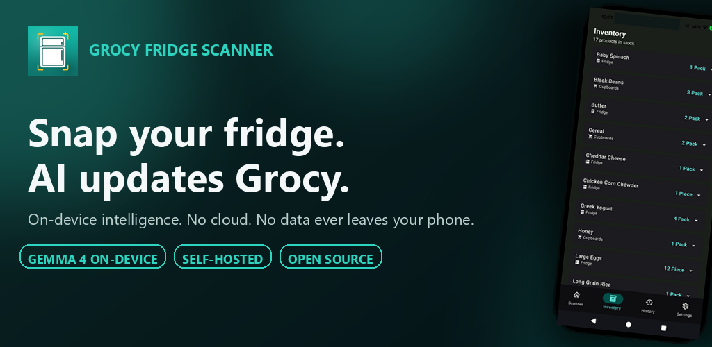
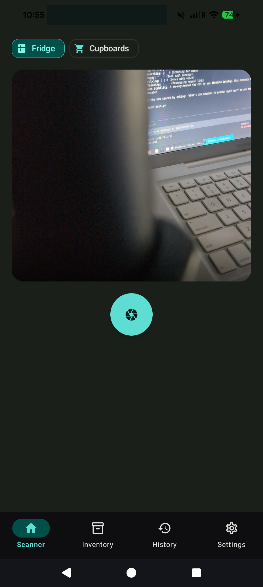
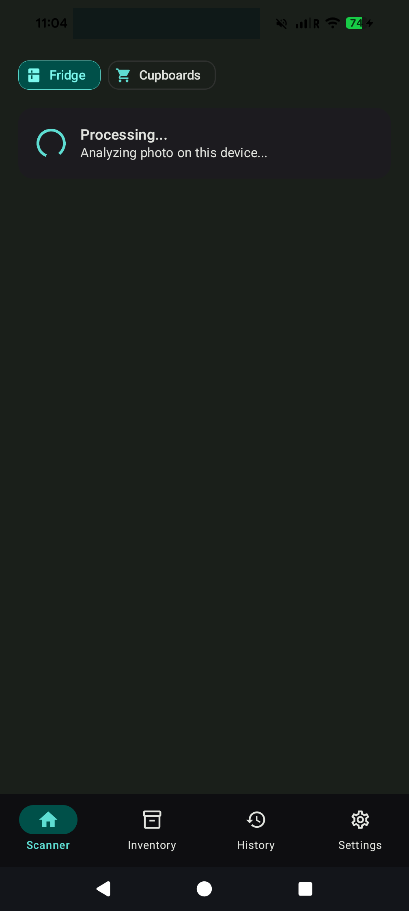
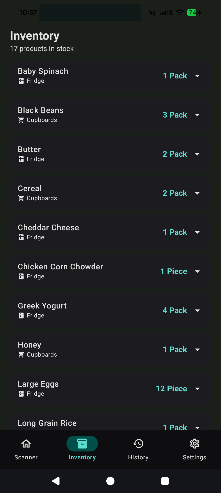
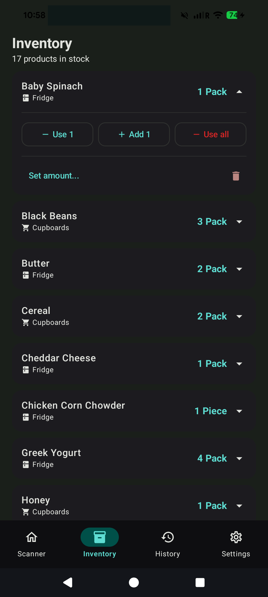
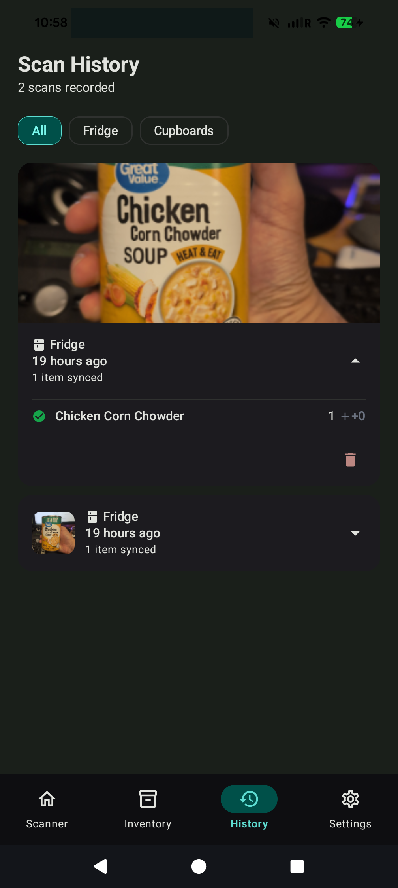
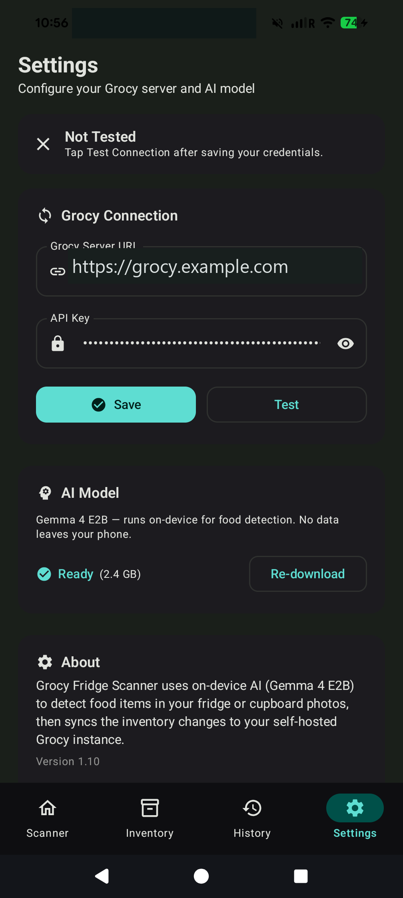

Point your phone at a fridge or cupboard, take a photo, and let AI detect and sync every food item directly to your Grocy inventory.

No manual entry. No barcode scanning one item at a time. Just a photo and a tap.
Open the app and take a photo of a fridge shelf, a cupboard, or any food storage area. Select Fridge or Cupboards to tag the location.
Gemma 4 E2B runs on your phone with GPU acceleration to identify each food item, count units, and determine container types — all without sending data anywhere.
See every proposed change with color-coded deltas. Edit names, adjust counts, exclude items. Items already at the right count are skipped automatically.
Inventory is pushed directly to your self-hosted Grocy instance via its REST API. New products and locations are created automatically.
From scanning to managing your inventory — everything happens on your phone.






See how Grocy Fridge Scanner detects food items and syncs them to your Grocy inventory — all on-device.
Every feature is designed around privacy, speed, and keeping your Grocy inventory accurate with minimal effort.
Gemma 4 E2B runs entirely on your phone with GPU acceleration. No images are uploaded, no cloud APIs are called. Your kitchen photos stay private.
Duplicate detections are merged using fuzzy name matching. "chips", "Chips", and "chip" are recognized as the same product automatically.
Every proposed change shows color-coded deltas. Toggle items on/off, edit product names, and adjust quantities. Items already at the correct count are skipped.
Every scan is recorded with thumbnails, timestamps, and item-level details. Failed scans are saved with error messages and a one-tap retry button. Filter by All, Fridge, or Cupboards.
Detected a food that doesn't exist in Grocy? It's created automatically with the right unit (Pack or Piece). Fridge and Cupboards locations are created on first sync.
Built specifically for Grocy's API. Uses the inventory endpoint, respects locations, matches quantity units, and tags changes with scanner notes. Supports HTTP and HTTPS.
API keys are stored with AES256-GCM encryption. Connection testing verifies your setup with specific error messages. Show/hide API key toggle for convenience.
Full light and dark theme support with Material 3 dynamic theming. Teal and green color palette that looks great in any lighting.
Not just scanning — manage your entire Grocy inventory directly from the app with quick actions for every item.
One-tap buttons to add 1, use 1, or use all of any product. Or set an exact amount with the inline number field.
Every Grocy product in an alphabetically sorted list with expandable cards showing location, quantity unit, and current stock.
Remove products from Grocy with a confirmation dialog. Full CRUD operations without leaving the app.
Stock levels update automatically. Pull to refresh anytime to sync with your Grocy instance.
Built with the latest Android tools and libraries for performance, reliability, and a great user experience.
Open source, self-hosted, privacy-first. Scan, manage, and sync in seconds.